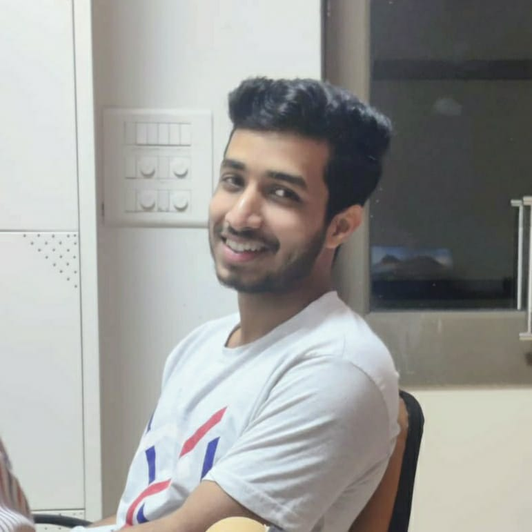

Tirthajit Baruah
PhD Student, Dept. of Cyber-Physical Systems
Indian Institute of Science, Bengaluru

PhD Student, Dept. of Cyber-Physical Systems
Indian Institute of Science, Bengaluru
I am a PhD student in the Department of Cyber-Physical Systems at the Indian Institute of Science, Bengaluru, advised by Dr. Punit Rathore. My research focuses on reliable and data-efficient AI for healthcare, with a particular interest in medical imaging, self-supervised learning, representation learning, calibrated risk estimation, and deployment-aware evaluation.
I am interested in learning from challenging clinical data settings where labels are limited, expensive, noisy, or unavailable. My recent work spans self-supervised learning for 3D medical imaging, deterministic autoencoders for structured latent representations, cluster assessment for image datasets, and AI-assisted radiology worklist triage using calibrated risk and queueing simulation.
Before joining IISc, I completed a BS-MS in Electrical Engineering and Computer Science with a minor in Data Science and Engineering at IISER Bhopal.
Learning useful representations from limited, noisy, or unlabeled clinical imaging data.
Designing learning objectives, perturbations, and latent structures for robust medical image understanding.
Studying calibration, uncertainty, risk estimation, and evaluation methods for AI systems used in healthcare settings.
Translating model scores into workflow-level impact through calibrated risk estimates and queueing simulation.
Developing patch-perturbation based self-supervised learning methods for 3D medical imaging, with emphasis on label-efficient representation learning.
Keywords: medical imaging, 3D SSL, representation learning, limited labels.
Translating classifier scores into calibrated risk estimates and simulating their downstream effect on radiology worklist prioritization.
Keywords: calibration, queueing simulation, radiology AI, clinical workflow.
Studying deterministic autoencoder architectures that induce structured low-rank latent spaces for classification, clustering, and generative tasks.
Exploring augmentation strategies and self-supervised time-series representation learning for large-scale EHR datasets.
Datasets: MIMIC-III, PhysioNet 2012.
Email: tirthajitb@iisc.ac.in
GitHub | Google Scholar | ORCID | OpenReview | LinkedIn